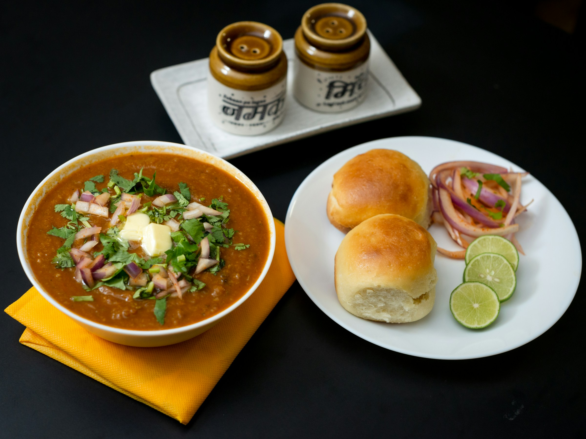

Back
Pav Bhaji Recipe

Photo by Shakti Rajpurohit on Unsplash
Description
Pav Bhaji is an iconic Mumbai street-food dish, loved across India for its flavorful blend of spicy mashed vegetables served alongside buttery toasted bread rolls (pav). This comforting, vibrant, and aromatic meal combines potatoes, tomatoes, peas, and spices into a rich, buttery gravy. Garnished with fresh coriander, lemon wedges, and chopped onions, Pav Bhaji is a satisfying treat enjoyed any time of the day.
Ingredients
- 3 medium potatoes, peeled and chopped
- 1 cup cauliflower florets, chopped
- ½ cup green peas
- 2 large tomatoes, finely chopped
- 1 large onion, finely chopped
- 1 medium capsicum, finely chopped
- 2 tablespoons pav bhaji masala
- 1 tablespoon ginger-garlic paste
- ½ teaspoon turmeric powder
- 1 teaspoon red chili powder
- Salt to taste
- 2 tablespoons butter
- Fresh coriander, chopped, for garnish
- Lemon wedges and chopped onions for serving
- 8 pav (bread rolls)
Steps
- Pressure cook potatoes, cauliflower, and peas until soft; mash coarsely and set aside.
- Heat butter in a pan; sauté onions until golden brown, then add ginger-garlic paste and capsicum; cook until softened.
- Add tomatoes, turmeric, red chili powder, pav bhaji masala, and salt; cook until tomatoes are soft and oil separates.
- Combine mashed vegetables with this mixture, adding water as needed to achieve desired consistency; simmer for 5-7 minutes.
- Toast pav on a hot pan with butter until crisp and golden.
- Garnish bhaji with fresh coriander, a dollop of butter, and serve hot with pav, lemon wedges, and chopped onions.